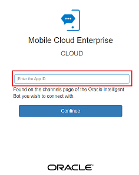
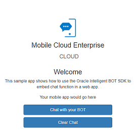
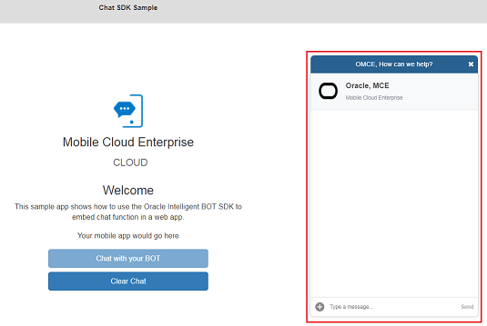
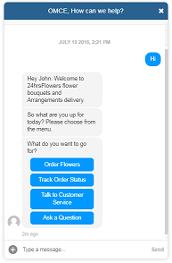

Oracle Intelligent Bots Advanced Training - Lab 8 (Channels)
Oracle Intelligent Bots Advanced Training - Lab 8 (Channels)Oracle Intelligent Bots provides direct channel support for Facebook, Web, iOS, Android and Webhook as a channel. And other direct channel support is on the roadmap.
In this lab, we'll configure and publish our bot through a web channel, download and install the sample client application, and run and test it against your the bot. Since this allows users to access a through a web page, it’s within easy reach of a multitude of users.
 Prerequisites
Prerequisites
- On the main Bots page in your instance, locate the tile for the
advt24horsflowers_bot5, click , select Clone, and name the clone
, select Clone, and name the clone advt24horsflowers_bot5_<YourUniqueInitials>. - Locate the tile for your clone of the bot and click it to open the bot.
- Make sure you have Node.js installed on your machine.
 Web Channel Setup on Your Local Machine
Web Channel Setup on Your Local Machine
- Open a browser and navigate to the OMCe Downloads page on OTN.
We'll be using the OMCe version of the testing tools, because the latest AMCe tools download is based on a later version of Node that is not compatible with this lab.
- Select the Accept License Agreement radio button.
- Download the OMCe Bots Client samples for JavaScript v18.2.3.0 to your machine.
- Extract the zip file and navigate to
chat-sample-webfolder. - Open a terminal window or command prompt in
chat-sample-webdirectory. - Run the following command:
npm install
- Start the sample ChatSample app by the following command:
node server.js
If your server starts correctly, you should see a message indicating that the server is listening on port 3000.
 Configure a New Web Channel for Your Bot
Configure a New Web Channel for Your Bot
- In the left navigation of your bot, click
 .
. - Select the Channels tab and click + Channel.
- In the Create Channel dialog, give the channel a name and a short description.
- Select Web as the Channel Type.
- Switch on the Channel Enabled toggle and then click Create.
- In the Channel definition screen, copy the App Id to a text file.
You will use it later on this lab while running the sample client application.
 Test Your Bot on the Web Channel
Test Your Bot on the Web Channel
- Open a new browser window and navigate to
http://localhost:3000.It should look like this:
 - Enter the App Id generated when you created a new Web channel and click Continue.
Now you should see this page:
 - On the next page, click Chat with your BOT.
The Web Messenger widget should appear in the right lower corner of your web browser window.
 - In the chat window, type
Hito initiate a chat.You should see a response from the 24HrsFlowers bot as shown here:

Hooray! You have now introduced your Bot to its public by hooking it up to a web interface. You can order flowers, track order status, talk to customer service and ask questions!